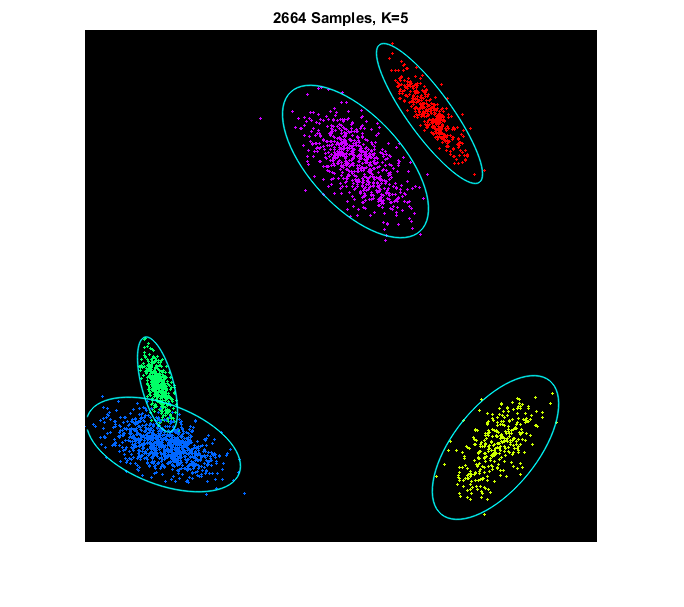
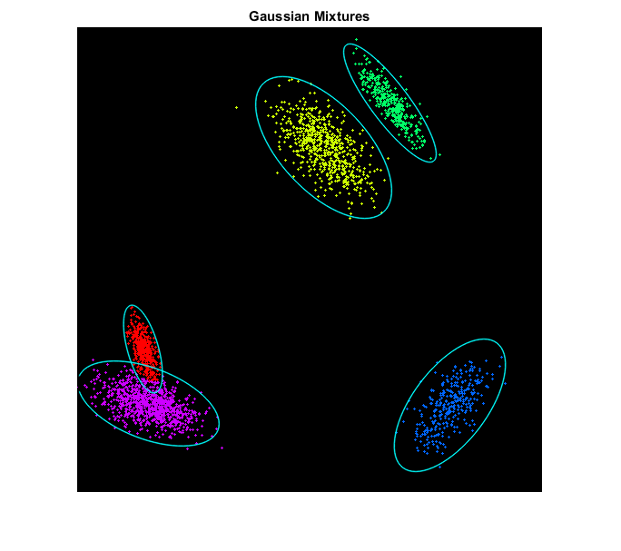
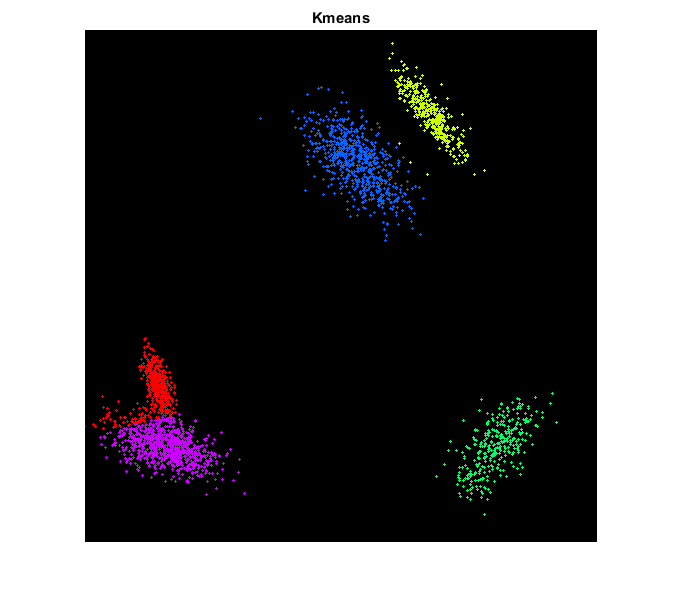

Contents
Gaussian Mixture Model (GMM)
Demonstrates EM clustering, and also compares againt K-means clustering.
Sources:
function gaussian_mix_demo()Data
sample 2D points from a mixture distribution of K bivariate Gaussians
K = 5;
sz = 512;
[pts, labels, mus, sigmas] = make_gaussian_mixture(K, sz);
whos pts labels mus sigmasdraw points (color-coded) with the ground-truth mixtures
clr = uint8(hsv(K) * 255);
clr(:,4) = 0;
img = zeros([sz sz 3], 'uint8');
img0 = cv.circle(img, pts, 1, 'Colors',clr(labels,:), 'Thickness','Filled');
for k=1:K
img0 = draw_gaussian(img0, mus(k,:), sigmas{k}, [0 255 255]);
end
imshow(img0), title(sprintf('%d Samples, K=%d', numel(labels), K))EM
cluster using EM by fitting a Gaussian mixture model
em = cv.EM();
em.ClustersNumber = K;
em.CovarianceMatrixType = 'Generic';
tic
[~,L] = em.trainEM(pts);
tocElapsed time is 4.042468 seconds.
draw clustered points along with the estimated mixture model
means = em.getMeans();
covs = em.getCovs();
img1 = cv.circle(img, pts, 1, 'Colors',clr(L+1,:), 'Thickness','Filled');
for k=1:K
img1 = draw_gaussian(img1, means(k,:), covs{k}, [0 255 255]);
end
figure, imshow(img1), title('Gaussian Mixtures')Kmeans
cluster using Kmeans
crit = struct('type','Count+EPS', 'maxCount',30, 'epsilon',0.1); L = cv.kmeans(pts, K, 'Criteria',crit, 'Attempts',10);
draw points color-coded by assigned label
img2 = cv.circle(img, pts, 1, 'Colors',clr(L+1,:), 'Thickness','Filled'); figure, imshow(img2), title('Kmeans')
endHelper functions
function [pts, labels, mus, sigmas] = make_gaussian_mixture(K, sz) %MAKE_GAUSSIAN_MIXTURE Random points from Gaussian mixture distribution % % [pts, labels, mus, sigmas] = make_gaussian_mixture(K, sz) % % ## Input % * __K__ number of components % * __sz__ image size, determines 2D points domain % % ## Output % * __pts__ matrix of 2D points % * __labels__ vector of corresponding component indices % * __mus__ K-by-2 mean of each component % * __sigmas__ cell array of length K, covariance of each component % % See also: gmdistribution.random % mus = zeros(K,2); sigmas = cell(K,1); pts = cell(K,1); labels = cell(K,1); for k=1:K mus(k,:) = (rand(1,2)*0.8 + 0.1) * sz; a = (rand(2,2) - 0.5) * sz * 0.1; sigmas{k} = (a.' * a) + sz*0.05*eye(2); n = 100 + randi([0 900]); pts{k} = my_mvnrnd(mus(k,:), sigmas{k}, n); labels{k} = k * ones(size(pts{k},1),1); end pts = single(cat(1, pts{:})); labels = int32(cat(1, labels{:})); end
function X = my_mvnrnd(mu, sigma, num) %MY_MVNRND Random points from Gaussian distribution % % X = my_mvnrnd(mu, sigma, num) % % ## Input % * __mu__ 1x2 mean vector % * __sigma__ 2x2 covariance matrix % * __num__ number of points to generate % % ## Output % * __X__ matrix of 2D points, num-by-2 % % See also: mvnrnd, randn % if mexopencv.require('stats') X = mvnrnd(mu, sigma, num); else X = bsxfun(@plus, randn(num,numel(mu)) * cholcov(sigma), mu); end end
Name Size Bytes Class Attributes labels 2664x1 10656 int32 mus 5x2 80 double pts 2664x2 21312 single sigmas 5x1 720 cell
function img = draw_gaussian(img, mu, sigma, clr) %DRAW_GAUSSIAN Draw a bivariate Gaussian % % img = draw_gaussian(img, mu, sigma, clr) % % ## Input % * __img__ input image on which to draw % * __mu__ 1x2 mean vector % * __sigma__ 2x2 covariance matrix % * __clr__ color % % ## Output % * __img__ output image % % Represent a 2D Gaussian with an ellipse where: % % * its mean is the center of the ellipse % * its covariance matrix eigenvector corresponding to largest eigenvalue % is the direction of the ellipse % * its (scaled) eigenvalues are the major/minor axis lengths of the % ellipse % [w,u,~] = cv.SVD.Compute(sigma); ang = atan2(u(2,1), u(1,1)) * (180/pi); s = sqrt(w)*3; img = cv.ellipse(img, mu, s, 'Angle',ang, 'Color',clr, 'LineType','AA'); end